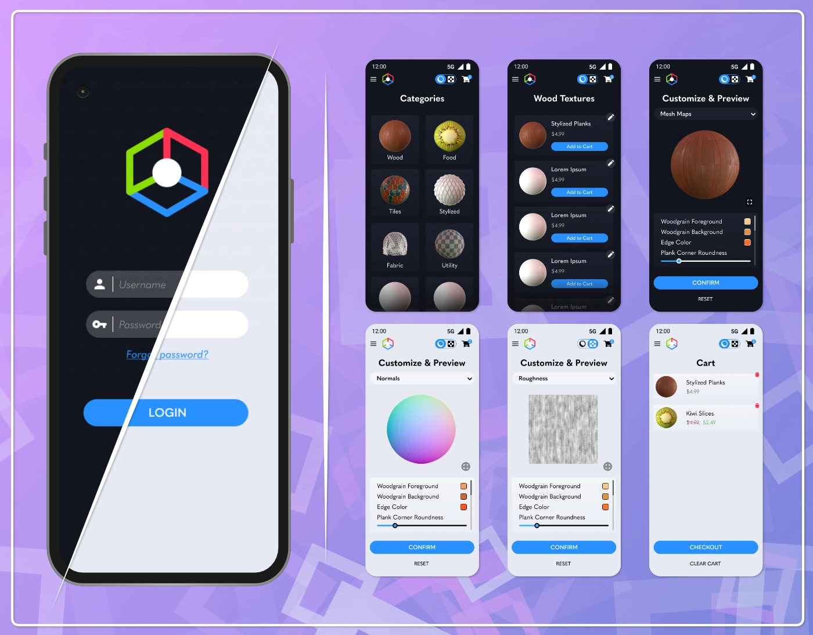
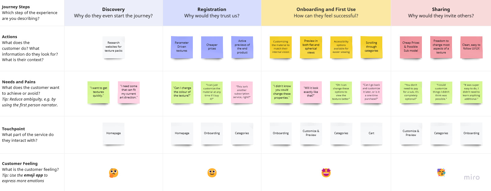
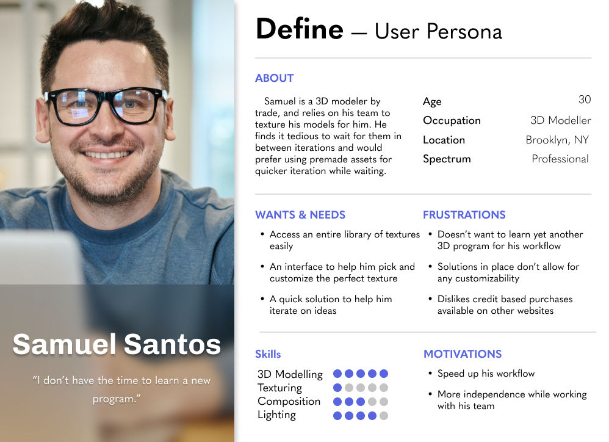
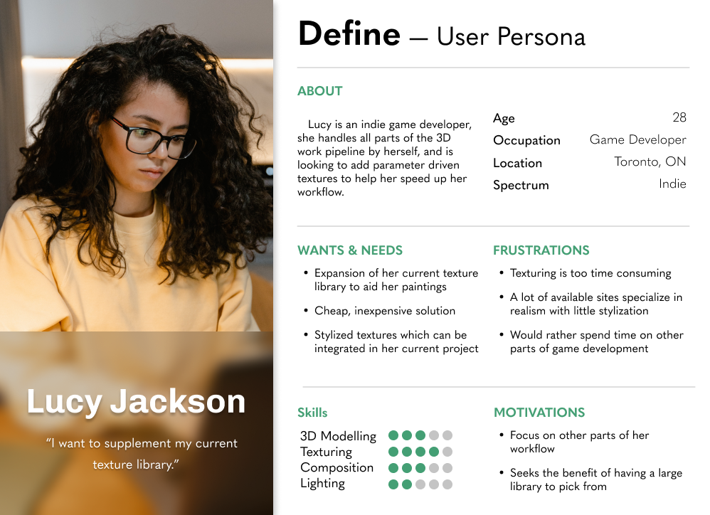
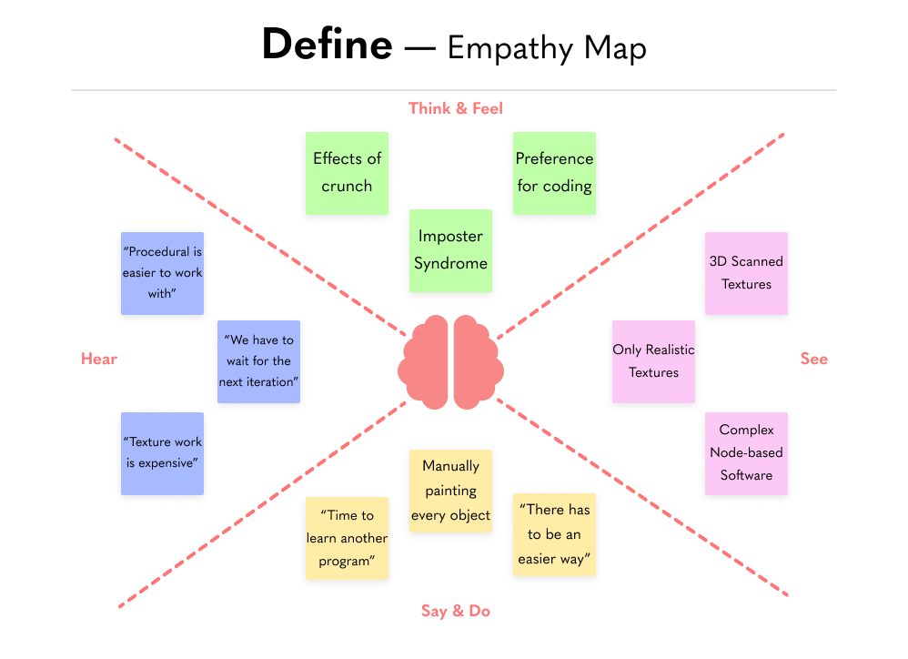
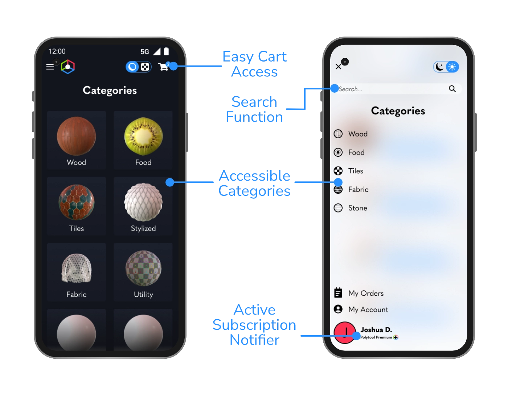
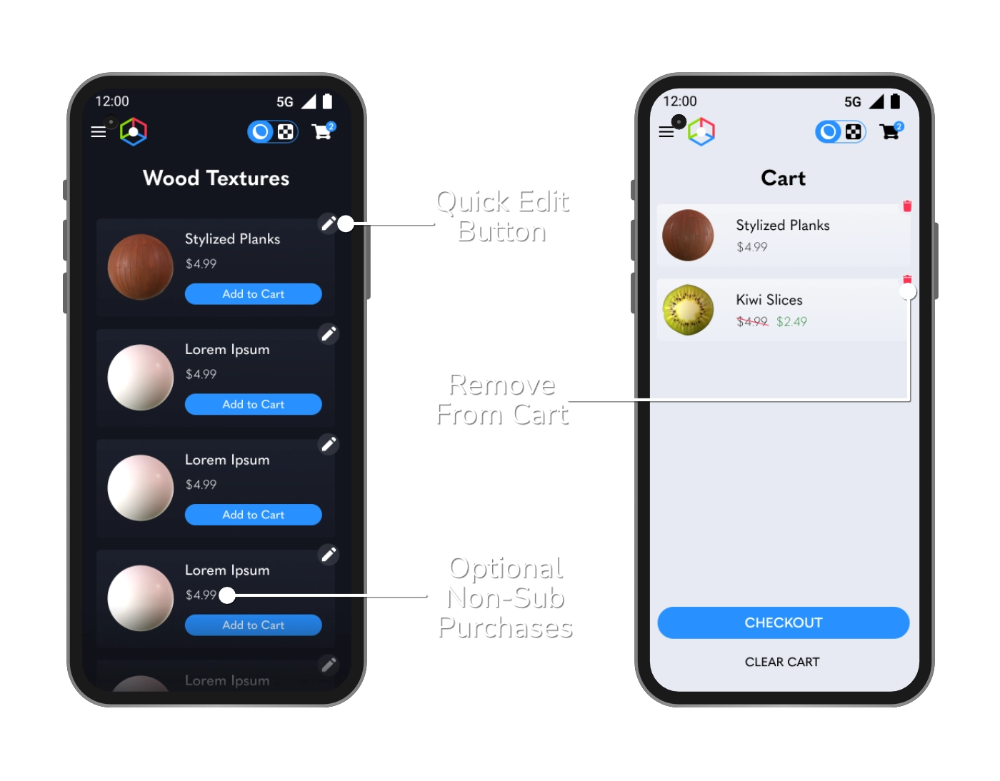

Info:
Type: UI/UX & 3D Design
Skills Used:
Prototyping
Wireframing
UI/UX
3D
Texturing
Rendering
Tools Used:
Polytools
It is involved with the display, customization and sale of parameter driven textures for 3D applications. Since they are fully parameter driven, this allows users to customize values such as colour and details within the textures by imputing numerical values. This can be used for rendering, game design or any other 3D application that renders textures. The strength in having everything parameter driven in Substance Designer lies in its ability to quickly iterate on the appearance of materials.
 The Figma prototype can be accessed here.Problem Statement
Journey Map & Personas
Personas were created from the answers generated from the User Journey Map and research in order to determine the best choices for the development of the service & app.
  Combined Goals
- Faster texturing workflow
- Cheap, inexpensive solution
- Clean, easy to use interface
- A large library of assets
- The ability to easily customize textures
Empathy Map
Prospective emotions of users based on possible use cases for the application. Designed as a remedy to those who don't have enough time to learn procedural texturing or just want high quality scalable textures at any point in their process. The app would have to be easy to approach, inexpensive and highly customizable to meet a wide swathe of workflows.
Customization is key
Customization and accessibility is paramount to the development of this app, due to this, users are able to change:
- Light mode and Dark modes
- Spherical and Plane modes
- Texture Properties
- Texture Colours
- Mesh Map Previews
Categorical
Items on the website are sorted categorically, allowing users to find what they’re looking for quickly. There is also a search function in the sidebar, for power users who know exactly what they’re looking for.
Subscription Optional
Users are able to choose whether they would prefer to pay for each texture individually, or have access to the entire library on a subscription basis. This gives power to those who would rather a one-time payment and permanent download access to the file they paid for.
Wireframes & Sitemap
Reflection
This project was born from a desire to merge both my passions for UI/UX Design and 3D Design into one cohesive concept. All of the materials shown here were created by myself in Substance Designer, and served as a platform for me to show some of the work that I’ve been doing in that field. I’ve reached out to industry professionals to get opinions and critiques on how they would like an app centered around this to function, and by that merit it was a great learning exercise for both skillsets.
Another work page focusing on my 3D Textures can be found here.